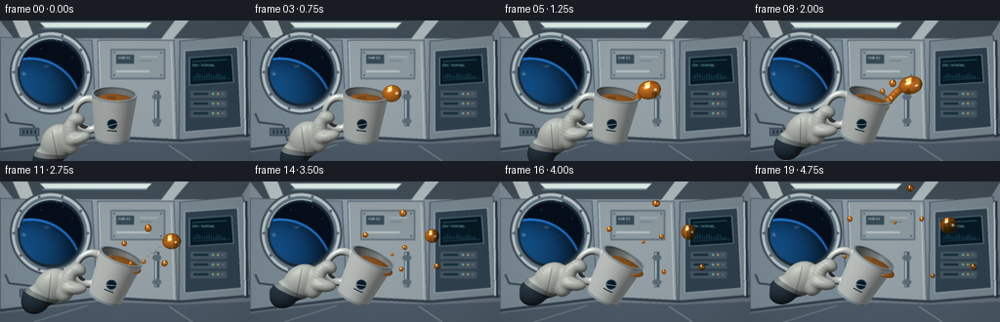
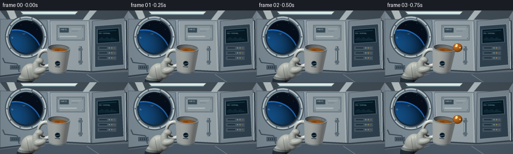

CODING AGENTS AS PIXEL WORLD MODELS
traex/GPT-6.1-Sol · mechanics_0003
点击播放 · 原生 RGB 像素
逐轮保存的候选
回放视频、检查图与代码变化。
每份候选均可单独播放。实际图片检查记录在下方工具轨迹中。
候选 01播放与检查图
点击播放 · 原生 RGB 像素


展开代码变化
--- 上一保存版本
+++ 本次保存版本
@@ -0,0 +1,353 @@
+"""Procedural microgravity scene; numpy software geometry renderer, no assets."""
+from pathlib import Path
+import math
+import numpy as np
+from PIL import Image, ImageDraw, ImageFont, ImageFilter
+import artifact_io
+
+ROOT=Path(__file__).resolve().parent
+W,H,S=256,144,3
+WW,HH=W*S,H*S
+RNG=np.random.default_rng(711)
+FONT='/usr/share/fonts/truetype/dejavu/DejaVuSans.ttf'
+def font(n):
+ return ImageFont.truetype(FONT, max(1,int(n*S)))
+def rgba(c): return tuple(c)
+def background():
+ yy,xx=np.mgrid[0:HH,0:WW].astype(float); x=xx/S; y=yy/S
+ g=.62+.18*np.exp(-((x-104)/115)**2-((y-30)/90)**2)-.15*y/H
+ base=np.stack([151*g+27,167*g+29,177*g+33],-1)
+ base+=RNG.normal(0,.5,(HH,WW,1))
+ im=Image.fromarray(np.uint8(np.clip(base,0,255))); d=ImageDraw.Draw(im)
+ def poly(points,fill,outline=None):
+ d.polygon([(int(a*S),int(b*S)) for a,b in points],fill=fill)
+ if outline: d.line([(int(a*S),int(b*S)) for a,b in points+[points[0]]],fill=outline,width=S)
+ def line(points,fill,width=1): d.line([(int(a*S),int(b*S)) for a,b in points],fill=fill,width=max(1,int(width*S)))
+ def rect(box,fill,outline=None,width=1): d.rectangle(tuple(int(a*S) for a in box),fill=fill,outline=outline,width=max(1,int(width*S)))
+ def ell(box,fill,outline=None,width=1): d.ellipse(tuple(int(a*S) for a in box),fill=fill,outline=outline,width=max(1,int(width*S)))
+ # Structural wall panels and converging ceiling/deck lines.
+ poly([(0,0),(256,0),(245,18),(14,18)],(65,77,86))
+ poly([(13,0),(28,0),(36,20),(22,20)],(186,196,196))
+ poly([(179,0),(193,0),(176,20),(164,20)],(173,185,188))
+ poly([(41,2),(155,2),(150,7),(46,7)],(226,240,236))
+ line([(43,8),(150,8)],(113,153,166),1.2)
+ poly([(0,17),(94,20),(99,120),(0,132)],(123,139,149),(73,88,99))
+ poly([(100,20),(178,20),(181,123),(103,119)],(148,160,165),(80,97,110))
+ line([(101,22),(104,117)],(191,203,204),1)
+ line([(175,23),(178,123)],(187,198,199),1)
+ poly([(184,21),(249,15),(256,117),(183,124)],(122,136,145),(65,78,88))
+ line([(0,132),(106,119),(185,123),(256,117)],(49,63,76),3)
+ poly([(0,135),(100,123),(182,126),(256,123),(256,144),(0,144)],(75,90,103))
+ line([(34,144),(89,127)],(125,140,149),1)
+ line([(197,144),(173,128)],(127,141,147),1)
+ # Rounded pressurized window surround.
+ ell((10,10,94,96),(62,75,84))
+ ell((12,12,92,94),(186,199,203))
+ ell((15,15,89,91),(97,115,128))
+ ell((18,18,86,88),(25,39,51))
+ # A small piece of Earth beyond the window; procedural ocean and clouds.
+ cx,cy,rr=52,53,32
+ dx=x-cx; dy=y-cy; win=dx*dx+dy*dy<rr*rr
+ space=np.zeros((HH,WW,3),float)+[5,13,26]
+ # Earth limb cuts across the porthole, leaving starfield above.
+ ex,ey,er=31,91,53
+ qx=(x-ex)/er; qy=(y-ey)/er; r2=qx*qx+qy*qy
+ earth=r2<1
+ z=np.sqrt(np.maximum(0,1-r2))
+ lighting=np.clip(.20+.75*(-.32*qx-.55*qy+.72*z),0,1)
+ noise=np.zeros((HH,WW),float)
+ for size,amp in [(8,.46),(20,.25),(45,.17),(100,.08),(210,.04)]:
+ ns=Image.fromarray(np.uint8(RNG.random((size,size))*255)).resize((WW,HH),Image.Resampling.BICUBIC)
+ noise+=np.array(ns)/255*amp
+ cloud=np.clip((noise-.48)*9,0,1)
+ cloud*=.6+.4*np.sin(x*.11+y*.09)**2
+ ocean=np.stack([10+13*z,53+40*z,98+59*z],-1)*lighting[...,None]
+ land=np.clip((noise-.58)*13,0,1)*(1-cloud)
+ ocean=ocean*(1-land[...,None]*.6)+np.stack([46*lighting,82*lighting,60*lighting],-1)*land[...,None]*.6
+ ocean=ocean*(1-cloud[...,None]*.92)+np.stack([201*lighting+20,212*lighting+20,216*lighting+23],-1)*cloud[...,None]*.92
+ limb=np.exp(-((np.sqrt(r2)-.985)/.021)**2)
+ ocean+=limb[...,None]*np.array([32,100,173])
+ space[earth]=ocean[earth]
+ atmosphere=(r2>=1)&(r2<1.045)
+ space[atmosphere]+=np.exp(-(r2[atmosphere]-1)*80)[:,None]*np.array([27,89,164])
+ arr=np.asarray(im).copy(); arr[win]=np.uint8(np.clip(space[win],0,255)); im=Image.fromarray(arr); d=ImageDraw.Draw(im)
+ for sx,sy in [(42,29),(64,26),(74,38),(30,38),(58,21)]:
+ ell((sx-.25,sy-.25,sx+.25,sy+.25),(170,197,213))
+ # Rim bevels, screws and reflections.
+ d.arc((18*S,18*S,86*S,88*S),190,290,fill=(201,221,225),width=1*S)
+ d.arc((17*S,17*S,87*S,89*S),8,97,fill=(44,61,75),width=2*S)
+ for a in np.linspace(0,2*np.pi,10,endpoint=False):
+ sx=52+38*np.cos(a); sy=53+39*np.sin(a)
+ ell((sx-1.3,sy-1.3,sx+1.3,sy+1.3),(71,85,94))
+ line([(sx-.5,sy-.45),(sx+.5,sy+.45)],(165,179,185),.45)
+ # Central stowage panel.
+ rect((113,29,169,60),(109,125,136),(93,108,119))
+ rect((115,31,167,58),(139,152,158))
+ rect((119,35,137,44),(53,73,85))
+ d.text((121*S,36*S),'HAB 02',font=font(3.5),fill=(213,226,226))
+ line([(143,37),(161,37)],(172,184,189),1)
+ line([(143,41),(155,41)],(91,110,122),.7)
+ for sx in [117,165]:
+ for sy in [33,56]: ell((sx-.7,sy-.7,sx+.7,sy+.7),(71,87,99))
+ rect((119,51,153,53),(177,188,191))
+ # Restrained warning marker and fastening rail.
+ rect((110,71,119,93),(93,108,119))
+ rect((112,74,117,90),(210,174,84))
+ for y0 in [76,82,88]: line([(112,y0),(117,y0-3)],(78,78,66),1)
+ rect((158,72,163,108),(71,88,101))
+ rect((159,73,160,107),(200,211,212))
+ ell((156,75,165,81),(91,107,117))
+ ell((156,100,165,106),(91,107,117))
+ # Flight control rack with glowing instrument display.
+ poly([(189,31),(243,27),(247,109),(189,114)],(48,65,79),(158,177,184))
+ poly([(194,38),(237,35),(239,63),(194,66)],(6,25,36),(104,135,148))
+ line([(197,42),(232,40)],(99,189,201),.5)
+ d.text((197*S,44*S),'ENV / NOMINAL',font=font(3.2),fill=(126,195,202))
+ for i in range(15):
+ sx=198+i*2.3; bar=2+3*np.sin(i*.7)**2
+ line([(sx,59),(sx,59-bar)],(58,150,174),.6)
+ line([(197,61),(235,59)],(56,101,118),.5)
+ for j in range(3):
+ rect((195,72+j*10,232,79+j*10),(70,86,98))
+ rect((198,74+j*10,213,76+j*10),(22,46,59))
+ for k in range(3): ell((217+k*5,74+j*10,219+k*5,76+j*10),[(111,183,161),(188,153,79),(92,113,126)][k])
+ # Metallic side grab bar, harness conduit and connectors.
+ line([(251,20),(252,119)],(36,51,65),4)
+ line([(250,21),(251,117)],(198,210,214),1.7)
+ line([(5,95),(9,104),(34,107),(38,123)],(49,64,77),2)
+ line([(5,95),(9,103),(34,106),(38,122)],(117,132,140),.65)
+ rect((20,110,40,118),(87,103,115),(52,68,79))
+ for i in range(4): rect((23+4*i,112,25+4*i,116),(41,58,73))
+ # Soft atmospheric focus; the foreground will stay sharp.
+ return np.asarray(im.filter(ImageFilter.GaussianBlur(.42*S)),dtype=float)/255
+
+BG=background()
+SCALE=36*S
+CX,CY=116*S,97*S
+view=np.array([0,-.32,-math.sqrt(1-.32**2)])
+up=np.array([0,-view[2],view[1]])
+Y,X=np.mgrid[0:HH,0:WW]
+orig=np.stack([(X-CX)/SCALE,(CY-Y)/SCALE*up[1],(CY-Y)/SCALE*up[2]],-1)+(-view)*7
+orig=orig.reshape(-1,3)
+D=np.broadcast_to(view,orig.shape)
+
+def local(p,ang):
+ c,s=np.cos(ang),np.sin(ang)
+ return np.stack([c*p[:,0]-s*p[:,1],s*p[:,0]+c*p[:,1],p[:,2]],-1)
+def world(p,ang):
+ p=np.asarray(p);c,s=np.cos(ang),np.sin(ang)
+ return np.stack([c*p[...,0]+s*p[...,1],-s*p[...,0]+c*p[...,1],p[...,2]],-1)
+def smin(a,b,k=.08):
+ h=np.maximum(k-np.abs(a-b),0)/k
+ return np.minimum(a,b)-h*h*k*.25
+
+def cup_sdf(q):
+ r=np.linalg.norm(q[:,[0,2]],axis=1)
+ yy=q[:,1]
+ rad=.475+(np.clip(yy,-.70,.63)+.70)*.123
+ outer=np.maximum((r-rad)*.992,np.maximum(-.70-yy,yy-.63))-.012
+ inner_rad=.426+(np.clip(yy,-.575,.8)+.70)*.123
+ inner=np.maximum((r-inner_rad)*.992,-.575-yy)
+ shell=np.maximum(outer,-inner)
+ ellipse=(np.sqrt(((q[:,0]+.70)/.39)**2+((yy+.005)/.47)**2)-1)*.41
+ handle=np.sqrt(ellipse**2+q[:,2]**2)-.095
+ # Smooth transitions where the loop meets the body.
+ return smin(shell,handle,.045)
+
+HAND=[((-1.55,-.86,.12),(.47,.58,.32),-.35),
+ ((-1.83,-1.39,.08),(.40,.46,.30),-.38),
+ ((-1.23,-.37,.26),(.20,.37,.19),-.32),
+ ((-1.035,-.07,.25),(.225,.17,.19),-.15),
+ ((-1.20,-.62,.30),(.20,.34,.21),-.10),
+ ((-1.14,-.82,.34),(.22,.30,.20),-.20),
+ ((-.96,-.58,.47),(.34,.175,.18),.35)]
+def ell_dist(p,cen,rad,rot=0):
+ v=p-np.array(cen)
+ if rot:
+ c,s=np.cos(rot),np.sin(rot)
+ v=np.stack([c*v[:,0]+s*v[:,1],-s*v[:,0]+c*v[:,1],v[:,2]],-1)
+ r=np.array(rad)
+ k0=np.linalg.norm(v/r,axis=1);k1=np.linalg.norm(v/(r*r),axis=1)
+ return k0*(k0-1)/np.maximum(k1,1e-8)
+def hand_sdf(q):
+ v=ell_dist(q,*HAND[0])
+ for h in HAND[1:]: v=smin(v,ell_dist(q,*h),.095)
+ return v
+
+def trace(sdf, ids, start=3.8,end=10, maxstep=110):
+ o=orig[ids]; tt=np.full(len(ids),start,dtype=float)
+ active=np.arange(len(ids)); hit=np.zeros(len(ids),bool)
+ for j in range(maxstep):
+ if len(active)==0: break
+ pp=o[active]+tt[active,None]*view
+ dd=sdf(pp)
+ good=dd<.0015
+ hit[active[good]]=True
+ alive=(~good)&(tt[active]<end)
+ active=active[alive]; dd=dd[alive]
+ tt[active]+=np.maximum(.001,dd*.8)
+ hi=ids[hit]; t=tt[hit]; pp=orig[hi]+t[:,None]*view
+ eps=.002
+ no=np.zeros_like(pp)
+ for ax in range(3):
+ off=np.zeros(3);off[ax]=eps
+ no[:,ax]=sdf(pp+off)-sdf(pp-off)
+ no/=np.maximum(np.linalg.norm(no,axis=1)[:,None],1e-8)
+ return hi,t,pp,no
+
+LIGHT=np.array([-.45,.72,.53]); LIGHT/=np.linalg.norm(LIGHT)
+L2=np.array([.7,.1,.6]);L2/=np.linalg.norm(L2)
+EYE=-view
+
+def solid_color(p,n,ang,kind):
+ q=local(p,ang); nl=local(n,ang)
+ dif=np.clip(n@LIGHT,0,1); fill=np.clip(n@L2,0,1)
+ face=np.clip(n@EYE,0,1)
+ hh=(LIGHT+EYE);hh/=np.linalg.norm(hh)
+ spec=np.maximum(n@hh,0)**50
+ if kind=='cup':
+ color=np.ones_like(p)*np.array([.86,.88,.865])
+ # Blue mission insignia, physically attached to the ceramic.
+ front=(q[:,2]>.32)
+ rr=((q[:,0]+.03)/.15)**2+((q[:,1]+.08)/.16)**2
+ badge=front&(rr<1)
+ color[badge]=[.045,.14,.22]
+ ring=badge&(rr>.69); color[ring]=[.26,.42,.5]
+ orbit=badge&(np.abs(q[:,1]+.09-q[:,0]*.35)<.012)
+ color[orbit]=[.8,.85,.82]
+ tiny=front&(abs(q[:,0]+.03)<.14)&(abs(q[:,1]+.29)<.018)
+ color[tiny]=[.2,.3,.37]
+ band=(q[:,1]<-.64)|(q[:,1]>.595)
+ color[band]=[.68,.74,.76]
+ # Interior receives much less fill than the outside.
+ internal=(nl[:,0]*q[:,0]+nl[:,2]*q[:,2]<-.025)
+ shade=.35+.58*dif+.12*fill
+ shade[internal]*=.62
+ ao=smooth=np.clip((q[:,1]+.60)/.6,.45,1)
+ shade[internal]*=ao[internal]
+ color*=shade[:,None]
+ color+=spec[:,None]*.38
+ color+=(1-face[:,None])**4*np.array([.08,.12,.15])
+ else:
+ color=np.ones_like(p)*[.78,.80,.77]
+ cuff=(q[:,1]<-1.20)
+ color[cuff]=[.17,.23,.28]
+ band=(q[:,1]<-1.13)&(q[:,1]>-1.27)
+ color[band]=[.54,.58,.57]
+ # Woven cloth and glove seams, laid onto the surface geometry.
+ textile=(np.sin(q[:,0]*230)*np.sin(q[:,1]*220)*.008)
+ color+=textile[:,None]
+ seam=(np.abs(np.sin((q[:,1]+.08)*32))<.13)&(q[:,0]>-1.42)&(q[:,0]<-1.00)&(q[:,2]>.31)
+ color[seam]*=.83
+ stitch=(np.abs(q[:,0]+1.64+.25*(q[:,1]+.8))<.016)&(q[:,2]>.28)
+ color[stitch]*=.77
+ color*= (.30+.66*dif+.14*fill)[:,None]
+ color+=spec[:,None]*.07
+ return np.clip(color,0,1)
+
+def tea_geometry(t,ang):
+ # A capillary-held body of tea in the mug. It rolls towards the lip.
+ shapes=[(world([.02+.20*t,.43,.0],ang),(.54,.115,.54),-ang)]
+ if t<.13: return shapes
+ u=np.clip((t-.13)/.87,0,1)
+ rim=world([.58,.62,.02],ang)
+ # Main globule stretches, rounds up, and drifts diagonally, not down.
+ center=rim+np.array([.12+1.50*u,.10+1.22*u,.10+.08*u])
+ rad=.23+.10*np.sin(np.pi*min(1,u*1.5))
+ shapes.append((center,(rad*(1+.13*np.sin(t*7)),rad*(.90+.16*np.cos(t*6)),rad*.85),.25*np.sin(t*5)))
+ if u<.56:
+ # Smooth neck closes and pinches off; not a gravitational pour.
+ neck=np.sin(np.pi*np.clip(u/.56,0,1))*.082+.036
+ if u>.42: neck*=max(.15,(.56-u)/.14)
+ for k in range(9):
+ v=k/8
+ pos=rim*(1-v)+center*v+np.array([0,.09*np.sin(v*np.pi),0])
+ r=neck*(1-.10*np.sin(v*np.pi))
+ shapes.append((pos,(r,r,r),0))
+ # Tiny pieces depart in different directions with independent velocities.
+ for birth,vel,r,phase in [(.27,(.45,2.03,-.13),.104,0),(.32,(-1.08,1.50,.22),.079,1),(.40,(2.4,.25,.35),.089,2),(.47,(-1.55,.56,.25),.060,3),(.52,(1.10,1.82,-.26),.069,4),(.61,(.15,2.18,.20),.046,5),(.65,(2.06,-.48,.1),.066,6)]:
+ if t>birth:
+ age=t-birth
+ pos=rim+np.array(vel)*(age*1.62)+np.array([0,.08*np.sin(age*5+phase),.12])
+ radius=r*min(1,(t-birth)*12+.18)
+ shapes.append((pos,(radius*(1+.07*np.sin(t*9+phase)),radius*(1-.09*np.sin(t*9+phase)),radius),phase*.3))
+ return shapes
+
+def tea_sdf(p,shapes):
+ out=np.full(len(p),1e4)
+ for cen,rad,rot in shapes:
+ out=smin(out,ell_dist(p,cen,rad,rot),.035)
+ return out
+
+def liquid_color(p,n,ids,t):
+ face=np.clip(n@EYE,0,1)
+ dif=np.clip(n@LIGHT,0,1)
+ # Screen-space refraction from the actual station behind the tea.
+ offsetx=(n[:,0]*7*S).astype(int)
+ offsety=(-(n@up)*7*S).astype(int)
+ iy,ix=np.unravel_index(ids,(HH,WW))
+ refr=BG[np.clip(iy+offsety,0,HH-1),np.clip(ix+offsetx,0,WW-1)]
+ absorption=np.array([.85,.47,.13])
+ color=refr*absorption*(.55+.33*face[:,None])
+ color+=np.array([.34,.15,.017])*(.28+.67*dif[:,None])
+ # Amber rim plus reflected dark-blue cabin; high Fresnel at grazing angles.
+ fr=(1-face)**3
+ reflected=np.stack([.16+.37*dif,.22+.33*dif,.24+.26*dif],-1)
+ color=color*(1-.45*fr[:,None])+reflected*.45*fr[:,None]
+ h=LIGHT+EYE;h/=np.linalg.norm(h)
+ spec=np.maximum(n@h,0)**95
+ broad=np.maximum(n@h,0)**12
+ h2=L2+EYE;h2/=np.linalg.norm(h2)
+ spec2=np.maximum(n@h2,0)**110
+ color+=spec[:,None]*np.array([1.15,1.09,.86])+broad[:,None]*.085
+ color+=spec2[:,None]*np.array([.46,.64,.74])
+ # Soft box-shaped light reflection, bringing liquid surface tension into view.
+ refl=2*(n@EYE)[:,None]*n-EYE
+ strip=(refl[:,1]>.69)&(np.abs(refl[:,0]+.3)<.26)
+ color[strip]+=[.48,.47,.38]
+ return np.clip(color,0,1)
+
+def render(frame):
+ t=frame/19
+ ease=np.sin(t*np.pi/2)**1.45
+ angle=.045+.44*ease
+ image=BG.reshape(-1,3).copy()
+ depth=np.full(HH*WW,np.inf)
+ # Bound the rays; SDF iteration is only performed near scene geometry.
+ ids=np.flatnonzero((X.reshape(-1)>20*S)&(X.reshape(-1)<176*S)&(Y.reshape(-1)>51*S))
+ for kind,fun in [('hand',hand_sdf),('cup',cup_sdf)]:
+ sdf=lambda p:fun(local(p,angle))
+ hi,tt,p,n=trace(sdf,ids)
+ visible=tt<depth[hi]
+ hi,tt,p,n=hi[visible],tt[visible],p[visible],n[visible]
+ image[hi]=solid_color(p,n,angle,kind);depth[hi]=tt
+ shapes=tea_geometry(t,angle)
+ # Intersect each bounding ellipsoid sphere to skip empty pixels.
+ tea_mask=np.zeros(HH*WW,bool)
+ for cen,rad,rot in shapes:
+ rel=orig-np.array(cen)
+ along=rel@view
+ dist2=np.sum(rel*rel,axis=1)-along*along
+ tea_mask|=dist2<(max(rad)+.05)**2
+ tids=np.flatnonzero(tea_mask)
+ sdf=lambda p:tea_sdf(p,shapes)
+ hi,tt,p,n=trace(sdf,tids,maxstep=130)
+ visible=tt<depth[hi]
+ hi,tt,p,n=hi[visible],tt[visible],p[visible],n[visible]
+ image[hi]=liquid_color(p,n,hi,t)
+ image=image.reshape(HH,WW,3)
+ # Subtle photographic edge falloff and warm/cool separation.
+ yy,xx=np.mgrid[0:HH,0:WW]
+ vig=1-.13*((xx/WW-.48)**2*2+(yy/HH-.47)**2*1.2)
+ image*=vig[...,None]
+ image=np.clip(image,0,1)
+ im=Image.fromarray(np.uint8(image*255+.5)).resize((W,H),Image.Resampling.LANCZOS)
+ return np.asarray(im)
+
+if __name__=='__main__':
+ frames=[]
+ for i in range(20):
+ frames.append(render(i))
+ print(f'Rendered {i+1}/20',flush=True)
+ artifact_io.save(np.stack(frames).astype(np.uint8),ROOT)
+ print('Saved RGB video artifacts.',flush=True)
可观测工具轨迹
实际执行的命令与返回图片。
命令 1exit 0
/bin/bash -lc 'ls -la && cat prompt.txt && cat GENERATION_RULES.md && cat task_spec.json'
命令 2exit 0
/bin/bash -lc "cat artifact_io.py && python - <<'PY' import importlib.util for m in ['numpy','PIL','scipy']: print(m, bool(importlib.util.find_spec(m))) PY"
命令 3exit 0
/bin/bash -lc 'fc-match DejaVuSans | head -1'
命令 4exit 0
/bin/bash -lc "python - <<'PY'
import importlib.util
print('skimage', bool(importlib.util.find_spec('skimage')))
PY"命令 5exit 0
/bin/bash -lc "cat > generate.py <<'PY'
\"\"\"Procedural microgravity scene; numpy software geometry renderer, no assets.\"\"\"
from pathlib import Path
import math
import numpy as np
from PIL import Image, ImageDraw, ImageFont, ImageFilter
import artifact_io
ROOT=Path(__file__).resolve().parent
W,H,S=256,144,3
WW,HH=W*S,H*S
RNG=np.random.default_rng(711)
FONT='/usr/share/fonts/truetype/dejavu/DejaVuSans.ttf'
def font(n):
return ImageFont.truetype(FONT, max(1,int(n*S)))
def rgba(c): return tuple(c)
def background():
yy,xx=np.mgrid[0:HH,0:WW].astype(float); x=xx/S; y=yy/S
g=.62+.18*np.exp(-((x-104)/115)**2-((y-30)/90)**2)-.15*y/H
base=np.stack([151*g+27,167*g+29,177*g+33],-1)
base+=RNG.normal(0,.5,(HH,WW,1))
im=Image.fromarray(np.uint8(np.clip(base,0,255))); d=ImageDraw.Draw(im)
def poly(points,fill,outline=None):
d.polygon([(int(a*S),int(b*S)) for a,b in points],fill=fill)
if outline: d.line([(int(a*S),int(b*S)) for a,b in points+[points[0]]],fill=outline,width=S)
def line(points,fill,width=1): d.line([(int(a*S),int(b*S)) for a,b in points],fill=fill,width=max(1,int(width*S)))
def rect(box,fill,outline=None,width=1): d.rectangle(tuple(int(a*S) for a in box),fill=fill,outline=outline,width=max(1,int(width*S)))
def ell(box,fill,outline=None,width=1): d.ellipse(tuple(int(a*S) for a in box),fill=fill,outline=outline,width=max(1,int(width*S)))
# Structural wall panels and converging ceiling/deck lines.
poly([(0,0),(256,0),(245,18),(14,18)],(65,77,86))
poly([(13,0),(28,0),(36,20),(22,20)],(186,196,196))
poly([(179,0),(193,0),(176,20),(164,20)],(173,185,188))
poly([(41,2),(155,2),(150,7),(46,7)],(226,240,236))
line([(43,8),(150,8)],(113,153,166),1.2)
poly([(0,17),(94,20),(99,120),(0,132)],(123,139,149),(73,88,99))
poly([(100,20),(178,20),(181,123),(103,119)],(148,160,165),(80,97,110))
line([(101,22),(104,117)],(191,203,204),1)
line([(175,23),(178,123)],(187,198,199),1)
poly([(184,21),(249,15),(256,117),(183,124)],(122,136,145),(65,78,88))
line([(0,132),(106,119),(185,123),(256,117)],(49,63,76),3)
poly([(0,135),(100,123),(182,126),(256,123),(256,144),(0,144)],(75,90,103))
line([(34,144),(89,127)],(125,140,149),1)
line([(197,144),(173,128)],(127,141,147),1)
# Rounded pressurized window surround.
ell((10,10,94,96),(62,75,84))
ell((12,12,92,94),(186,199,203))
ell((15,15,89,91),(97,115,128))
ell((18,18,86,88),(25,39,51))
# A small piece of Earth beyond the window; procedural ocean and clouds.
cx,cy,rr=52,53,32
dx=x-cx; dy=y-cy; win=dx*dx+dy*dy<rr*rr
space=np.zeros((HH,WW,3),float)+[5,13,26]
# Earth limb cuts across the porthole, leaving starfield above.
ex,ey,er=31,91,53
qx=(x-ex)/er; qy=(y-ey)/er; r2=qx*qx+qy*qy
earth=r2<1
z=np.sqrt(np.maximum(0,1-r2))
lighting=np.clip(.20+.75*(-.32*qx-.55*qy+.72*z),0,1)
noise=np.zeros((HH,WW),float)
for size,amp in [(8,.46),(20,.25),(45,.17),(100,.08),(210,.04)]:
ns=Image.fromarray(np.uint8(RNG.random((size,size))*255)).resize((WW,HH),Image.Resampling.BICUBIC)
noise+=np.array(ns)/255*amp
cloud=np.clip((noise-.48)*9,0,1)
cloud*=.6+.4*np.sin(x*.11+y*.09)**2
ocean=np.stack([10+13*z,53+40*z,98+59*z],-1)*lighting[...,None]
land=np.clip((noise-.58)*13,0,1)*(1-cloud)
ocean=ocean*(1-land[...,None]*.6)+np.stack([46*lighting,82*lighting,60*lighting],-1)*land[...,None]*.6
ocean=ocean*(1-cloud[...,None]*.92)+np.stack([201*lighting+20,212*lighting+20,216*lighting+23],-1)*cloud[...,None]*.92
limb=np.exp(-((np.sqrt(r2)-.985)/.021)**2)
ocean+=limb[...,None]*np.array([32,100,173])
space[earth]=ocean[earth]
atmosphere=(r2>=1)&(r2<1.045)
space[atmosphere]+=np.exp(-(r2[atmosphere]-1)*80)[:,None]*np.array([27,89,164])
arr=np.asarray(im).copy(); arr[win]=np.uint8(np.clip(space[win],0,255)); im=Image.fromarray(arr); d=ImageDraw.Draw(im)
for sx,sy in [(42,29),(64,26),(74,38),(30,38),(58,21)]:
ell((sx-.25,sy-.25,sx+.25,sy+.25),(170,197,213))
# Rim bevels, screws and reflections.
d.arc((18*S,18*S,86*S,88*S),190,290,fill=(201,221,225),width=1*S)
d.arc((17*S,17*S,87*S,89*S),8,97,fill=(44,61,75),width=2*S)
for a in np.linspace(0,2*np.pi,10,endpoint=False):
sx=52+38*np.cos(a); sy=53+39*np.sin(a)
ell((sx-1.3,sy-1.3,sx+1.3,sy+1.3),(71,85,94))
line([(sx-.5,sy-.45),(sx+.5,sy+.45)],(165,179,185),.45)
# Central stowage panel.
rect((113,29,169,60),(109,125,136),(93,108,119))
rect((115,31,167,58),(139,152,158))
rect((119,35,137,44),(53,73,85))
d.text((121*S,36*S),'HAB 02',font=font(3.5),fill=(213,226,226))
line([(143,37),(161,37)],(172,184,189),1)
line([(143,41),(155,41)],(91,110,122),.7)
for sx in [117,165]:
for sy in [33,56]: ell((sx-.7,sy-.7,sx+.7,sy+.7),(71,87,99))
rect((119,51,153,53),(177,188,191))
# Restrained warning marker and fastening rail.
rect((110,71,119,93),(93,108,119))
rect((112,74,117,90),(210,174,84))
for y0 in [76,82,88]: line([(112,y0),(117,y0-3)],(78,78,66),1)
rect((158,72,163,108),(71,88,101))
rect((159,73,160,107),(200,211,212))
ell((156,75,165,81),(91,107,117))
ell((156,100,165,106),(91,107,117))
# Flight control rack with glowing instrument display.
poly([(189,31),(243,27),(247,109),(189,114)],(48,65,79),(158,177,184))
poly([(194,38),(237,35),(239,63),(194,66)],(6,25,36),(104,135,148))
line([(197,42),(232,40)],(99,189,201),.5)
d.text((197*S,44*S),'ENV / NOMINAL',font=font(3.2),fill=(126,195,202))
for i in range(15):
sx=198+i*2.3; bar=2+3*np.sin(i*.7)**2
line([(sx,59),(sx,59-bar)],(58,150,174),.6)
line([(197,61),(235,59)],(56,101,118),.5)
for j in range(3):
rect((195,72+j*10,232,79+j*10),(70,86,98))
rect((198,74+j*10,213,76+j*10),(22,46,59))
for k in range(3): ell((217+k*5,74+j*10,219+k*5,76+j*10),[(111,183,161),(188,153,79),(92,113,126)][k])
# Metallic side grab bar, harness conduit and connectors.
line([(251,20),(252,119)],(36,51,65),4)
line([(250,21),(251,117)],(198,210,214),1.7)
line([(5,95),(9,104),(34,107),(38,123)],(49,64,77),2)
line([(5,95),(9,103),(34,106),(38,122)],(117,132,140),.65)
rect((20,110,40,118),(87,103,115),(52,68,79))
for i in range(4): rect((23+4*i,112,25+4*i,116),(41,58,73))
# Soft atmospheric focus; the foreground will stay sharp.
return np.asarray(im.filter(ImageFilter.GaussianBlur(.42*S)),dtype=float)/255
BG=background()
SCALE=36*S
CX,CY=116*S,97*S
view=np.array([0,-.32,-math.sqrt(1-.32**2)])
up=np.array([0,-view[2],view[1]])
Y,X=np.mgrid[0:HH,0:WW]
orig=np.stack([(X-CX)/SCALE,(CY-Y)/SCALE*up[1],(CY-Y)/SCALE*up[2]],-1)+(-view)*7
orig=orig.reshape(-1,3)
D=np.broadcast_to(view,orig.shape)
def local(p,ang):
c,s=np.cos(ang),np.sin(ang)
return np.stack([c*p[:,0]-s*p[:,1],s*p[:,0]+c*p[:,1],p[:,2]],-1)
def world(p,ang):
p=np.asarray(p);c,s=np.cos(ang),np.sin(ang)
return np.stack([c*p[...,0]+s*p[...,1],-s*p[...,0]+c*p[...,1],p[...,2]],-1)
def smin(a,b,k=.08):
h=np.maximum(k-np.abs(a-b),0)/k
return np.minimum(a,b)-h*h*k*.25
def cup_sdf(q):
r=np.linalg.norm(q[:,[0,2]],axis=1)
yy=q[:,1]
rad=.475+(np.clip(yy,-.70,.63)+.70)*.123
outer=np.maximum((r-rad)*.992,np.maximum(-.70-yy,yy-.63))-.012
inner_rad=.426+(np.clip(yy,-.575,.8)+.70)*.123
inner=np.maximum((r-inner_rad)*.992,-.575-yy)
shell=np.maximum(outer,-inner)
ellipse=(np.sqrt(((q[:,0]+.70)/.39)**2+((yy+.005)/.47)**2)-1)*.41
handle=np.sqrt(ellipse**2+q[:,2]**2)-.095
# Smooth transitions where the loop meets the body.
return smin(shell,handle,.045)
HAND=[((-1.55,-.86,.12),(.47,.58,.32),-.35),
((-1.83,-1.39,.08),(.40,.46,.30),-.38),
((-1.23,-.37,.26),(.20,.37,.19),-.32),
((-1.035,-.07,.25),(.225,.17,.19),-.15),
((-1.20,-.62,.30),(.20,.34,.21),-.10),
((-1.14,-.82,.34),(.22,.30,.20),-.20),
((-.96,-.58,.47),(.34,.175,.18),.35)]
def ell_dist(p,cen,rad,rot=0):
v=p-np.array(cen)
if rot:
c,s=np.cos(rot),np.sin(rot)
v=np.stack([c*v[:,0]+s*v[:,1],-s*v[:,0]+c*v[:,1],v[:,2]],-1)
r=np.array(rad)
k0=np.linalg.norm(v/r,axis=1);k1=np.linalg.norm(v/(r*r),axis=1)
return k0*(k0-1)/np.maximum(k1,1e-8)
def hand_sdf(q):
v=ell_dist(q,*HAND[0])
for h in HAND[1:]: v=smin(v,ell_dist(q,*h),.095)
return v
def trace(sdf, ids, start=3.8,end=10, maxstep=110):
o=orig[ids]; tt=np.full(len(ids),start,dtype=float)
active=np.arange(len(ids)); hit=np.zeros(len(ids),bool)
for j in range(maxstep):
if len(active)==0: break
pp=o[active]+tt[active,None]*view
dd=sdf(pp)
good=dd<.0015
hit[active[good]]=True
alive=(~good)&(tt[active]<end)
active=active[alive]; dd=dd[alive]
tt[active]+=np.maximum(.001,dd*.8)
hi=ids[hit]; t=tt[hit]; pp=orig[hi]+t[:,None]*view
eps=.002
no=np.zeros_like(pp)
for ax in range(3):
off=np.zeros(3);off[ax]=eps
no[:,ax]=sdf(pp+off)-sdf(pp-off)
no/=np.maximum(np.linalg.norm(no,axis=1)[:,None],1e-8)
return hi,t,pp,no
LIGHT=np.array([-.45,.72,.53]); LIGHT/=np.linalg.norm(LIGHT)
L2=np.array([.7,.1,.6]);L2/=np.linalg.norm(L2)
EYE=-view
def solid_color(p,n,ang,kind):
q=local(p,ang); nl=local(n,ang)
dif=np.clip(n@LIGHT,0,1); fill=np.clip(n@L2,0,1)
face=np.clip(n@EYE,0,1)
hh=(LIGHT+EYE);hh/=np.linalg.norm(hh)
spec=np.maximum(n@hh,0)**50
if kind=='cup':
color=np.ones_like(p)*np.array([.86,.88,.865])
# Blue mission insignia, physically attached to the ceramic.
front=(q[:,2]>.32)
rr=((q[:,0]+.03)/.15)**2+((q[:,1]+.08)/.16)**2
badge=front&(rr<1)
color[badge]=[.045,.14,.22]
ring=badge&(rr>.69); color[ring]=[.26,.42,.5]
orbit=badge&(np.abs(q[:,1]+.09-q[:,0]*.35)<.012)
color[orbit]=[.8,.85,.82]
tiny=front&(abs(q[:,0]+.03)<.14)&(abs(q[:,1]+.29)<.018)
color[tiny]=[.2,.3,.37]
band=(q[:,1]<-.64)|(q[:,1]>.595)
color[band]=[.68,.74,.76]
# Interior receives much less fill than the outside.
internal=(nl[:,0]*q[:,0]+nl[:,2]*q[:,2]<-.025)
shade=.35+.58*dif+.12*fill
shade[internal]*=.62
ao=smooth=np.clip((q[:,1]+.60)/.6,.45,1)
shade[internal]*=ao[internal]
color*=shade[:,None]
color+=spec[:,None]*.38
color+=(1-face[:,None])**4*np.array([.08,.12,.15])
else:
color=np.ones_like(p)*[.78,.80,.77]
cuff=(q[:,1]<-1.20)
color[cuff]=[.17,.23,.28]
band=(q[:,1]<-1.13)&(q[:,1]>-1.27)
color[band]=[.54,.58,.57]
# Woven cloth and glove seams, laid onto the surface geometry.
textile=(np.sin(q[:,0]*230)*np.sin(q[:,1]*220)*.008)
color+=textile[:,None]
seam=(np.abs(np.sin((q[:,1]+.08)*32))<.13)&(q[:,0]>-1.42)&(q[:,0]<-1.00)&(q[:,2]>.31)
color[seam]*=.83
stitch=(np.abs(q[:,0]+1.64+.25*(q[:,1]+.8))<.016)&(q[:,2]>.28)
color[stitch]*=.77
color*= (.30+.66*dif+.14*fill)[:,None]
color+=spec[:,None]*.07
return np.clip(color,0,1)
def tea_geometry(t,ang):
# A capillary-held body of tea in the mug. It rolls towards the lip.
shapes=[(world([.02+.20*t,.43,.0],ang),(.54,.115,.54),-ang)]
if t<.13: return shapes
u=np.clip((t-.13)/.87,0,1)
rim=world([.58,.62,.02],ang)
# Main globule stretches, rounds up, and drifts diagonally, not down.
center=rim+np.array([.12+1.50*u,.10+1.22*u,.10+.08*u])
rad=.23+.10*np.sin(np.pi*min(1,u*1.5))
shapes.append((center,(rad*(1+.13*np.sin(t*7)),rad*(.90+.16*np.cos(t*6)),rad*.85),.25*np.sin(t*5)))
if u<.56:
# Smooth neck closes and pinches off; not a gravitational pour.
neck=np.sin(np.pi*np.clip(u/.56,0,1))*.082+.036
if u>.42: neck*=max(.15,(.56-u)/.14)
for k in range(9):
v=k/8
pos=rim*(1-v)+center*v+np.array([0,.09*np.sin(v*np.pi),0])
r=neck*(1-.10*np.sin(v*np.pi))
shapes.append((pos,(r,r,r),0))
# Tiny pieces depart in different directions with independent velocities.
for birth,vel,r,phase in [(.27,(.45,2.03,-.13),.104,0),(.32,(-1.08,1.50,.22),.079,1),(.40,(2.4,.25,.35),.089,2),(.47,(-1.55,.56,.25),.060,3),(.52,(1.10,1.82,-.26),.069,4),(.61,(.15,2.18,.20),.046,5),(.65,(2.06,-.48,.1),.066,6)]:
if t>birth:
age=t-birth
pos=rim+np.array(vel)*(age*1.62)+np.array([0,.08*np.sin(age*5+phase),.12])
radius=r*min(1,(t-birth)*12+.18)
shapes.append((pos,(radius*(1+.07*np.sin(t*9+phase)),radius*(1-.09*np.sin(t*9+phase)),radius),phase*.3))
return shapes
def tea_sdf(p,shapes):
out=np.full(len(p),1e4)
for cen,rad,rot in shapes:
out=smin(out,ell_dist(p,cen,rad,rot),.035)
return out
def liquid_color(p,n,ids,t):
face=np.clip(n@EYE,0,1)
dif=np.clip(n@LIGHT,0,1)
# Screen-space refraction from the actual station behind the tea.
offsetx=(n[:,0]*7*S).astype(int)
offsety=(-(n@up)*7*S).astype(int)
iy,ix=np.unravel_index(ids,(HH,WW))
refr=BG[np.clip(iy+offsety,0,HH-1),np.clip(ix+offsetx,0,WW-1)]
absorption=np.array([.85,.47,.13])
color=refr*absorption*(.55+.33*face[:,None])
color+=np.array([.34,.15,.017])*(.28+.67*dif[:,None])
# Amber rim plus reflected dark-blue cabin; high Fresnel at grazing angles.
fr=(1-face)**3
reflected=np.stack([.16+.37*dif,.22+.33*dif,.24+.26*dif],-1)
color=color*(1-.45*fr[:,None])+reflected*.45*fr[:,None]
h=LIGHT+EYE;h/=np.linalg.norm(h)
spec=np.maximum(n@h,0)**95
broad=np.maximum(n@h,0)**12
h2=L2+EYE;h2/=np.linalg.norm(h2)
spec2=np.maximum(n@h2,0)**110
color+=spec[:,None]*np.array([1.15,1.09,.86])+broad[:,None]*.085
color+=spec2[:,None]*np.array([.46,.64,.74])
# Soft box-shaped light reflection, bringing liquid surface tension into view.
refl=2*(n@EYE)[:,None]*n-EYE
strip=(refl[:,1]>.69)&(np.abs(refl[:,0]+.3)<.26)
color[strip]+=[.48,.47,.38]
return np.clip(color,0,1)
def render(frame):
t=frame/19
ease=np.sin(t*np.pi/2)**1.45
angle=.045+.44*ease
image=BG.reshape(-1,3).copy()
depth=np.full(HH*WW,np.inf)
# Bound the rays; SDF iteration is only performed near scene geometry.
ids=np.flatnonzero((X.reshape(-1)>20*S)&(X.reshape(-1)<176*S)&(Y.reshape(-1)>51*S))
for kind,fun in [('hand',hand_sdf),('cup',cup_sdf)]:
sdf=lambda p:fun(local(p,angle))
hi,tt,p,n=trace(sdf,ids)
visible=tt<depth[hi]
hi,tt,p,n=hi[visible],tt[visible],p[visible],n[visible]
image[hi]=solid_color(p,n,angle,kind);depth[hi]=tt
shapes=tea_geometry(t,angle)
# Intersect each bounding ellipsoid sphere to skip empty pixels.
tea_mask=np.zeros(HH*WW,bool)
for cen,rad,rot in shapes:
rel=orig-np.array(cen)
along=rel@view
dist2=np.sum(rel*rel,axis=1)-along*along
tea_mask|=dist2<(max(rad)+.05)**2
tids=np.flatnonzero(tea_mask)
sdf=lambda p:tea_sdf(p,shapes)
hi,tt,p,n=trace(sdf,tids,maxstep=130)
visible=tt<depth[hi]
hi,tt,p,n=hi[visible],tt[visible],p[visible],n[visible]
image[hi]=liquid_color(p,n,hi,t)
image=image.reshape(HH,WW,3)
# Subtle photographic edge falloff and warm/cool separation.
yy,xx=np.mgrid[0:HH,0:WW]
vig=1-.13*((xx/WW-.48)**2*2+(yy/HH-.47)**2*1.2)
image*=vig[...,None]
image=np.clip(image,0,1)
im=Image.fromarray(np.uint8(image*255+.5)).resize((W,H),Image.Resampling.LANCZOS)
return np.asarray(im)
if __name__=='__main__':
frames=[]
for i in range(20):
frames.append(render(i))
print(f'Rendered {i+1}/20',flush=True)
artifact_io.save(np.stack(frames).astype(np.uint8),ROOT)
print('Saved RGB video artifacts.',flush=True)
PY
OPENBLAS_NUM_THREADS=1 python generate.py"命令 6exit 0
/bin/bash -lc "command -v ffmpeg; python - <<'PY'
import numpy as np
from PIL import Image
from pathlib import Path
p=Path('.')
a=np.load(p/'pixels.npz')['pixels']
assert a.shape==(144,256,20)
fs=sorted((p/'frames').glob('*.png'))
assert len(fs)==20
for f in fs:
im=Image.open(f);assert im.size==(256,144) and im.mode=='RGB'
print('Validated 20 RGB frames, 256Ã144, and all required artifacts.')
print('Mean successive frame change:', round(np.abs(np.array(Image.open(fs[-1])).astype(float)-np.array(Image.open(fs[-2])).astype(float)).mean(),2))
PY"保存候选 1 份；完成命令 6 次；可验证图片返回 0 张。原始 API 响应与完整日志保留在本地。